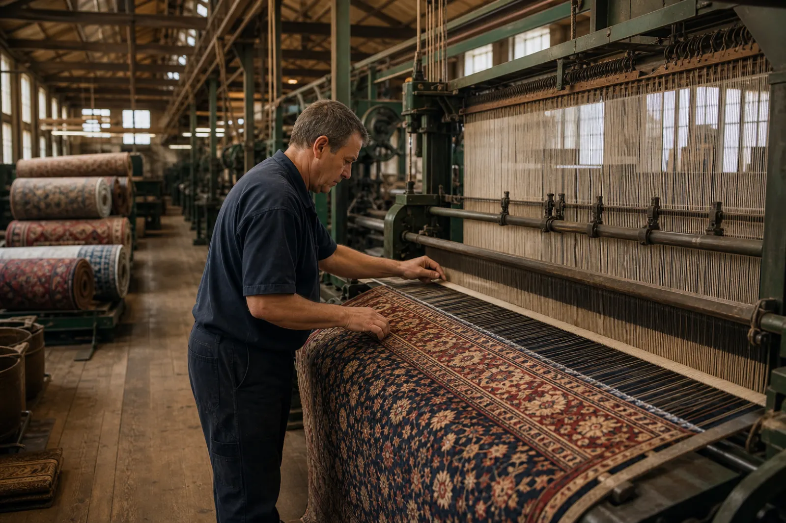

Kidderminster, the carpet town
Kidderminster is one of the strongest carpet-related locations in the country, with a long manufacturing history and the Museum of Carpet right in the town. That makes this page a natural place to talk properly about carpet care, traffic lanes, fibres, stains, upholstery, rugs and maintaining cleaner floors in homes and businesses.
As a town known for carpet manufacture, Kidderminster is a fitting place to take carpet care seriously. JW Carpet Care is proud to clean carpets in an area with such strong flooring heritage, helping modern homes, rentals and businesses keep their carpets looking fresh and well cared for.
JW Carpet Care covers Kidderminster, Habberley, Franche, Hoobrook, Blakebrook, Hurcott, Spennells, Wolverley, Cookley and Bewdley for carpet cleaning, stain removal, upholstery cleaning, hard floor cleaning and commercial carpet cleaning.